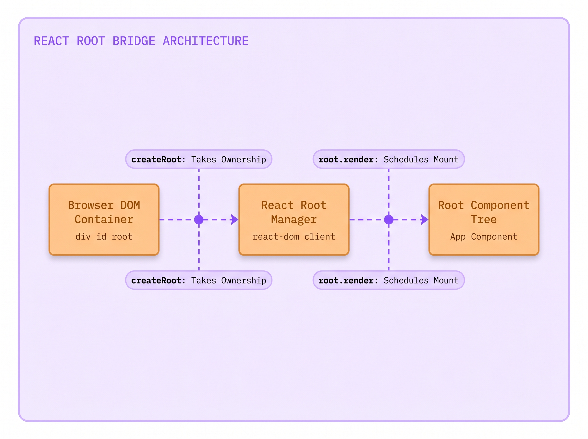
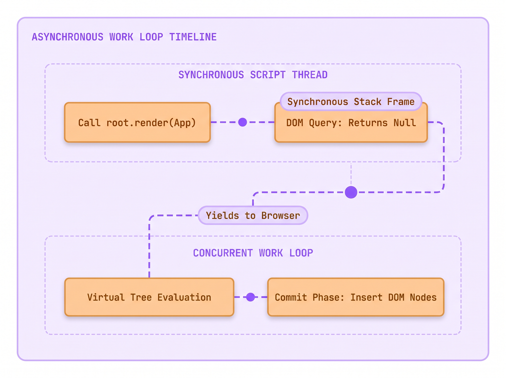
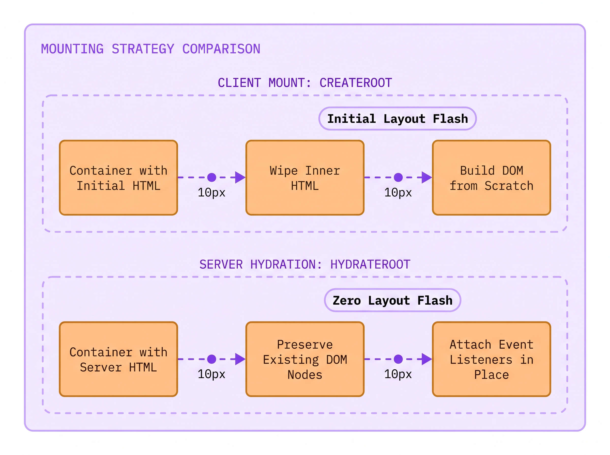
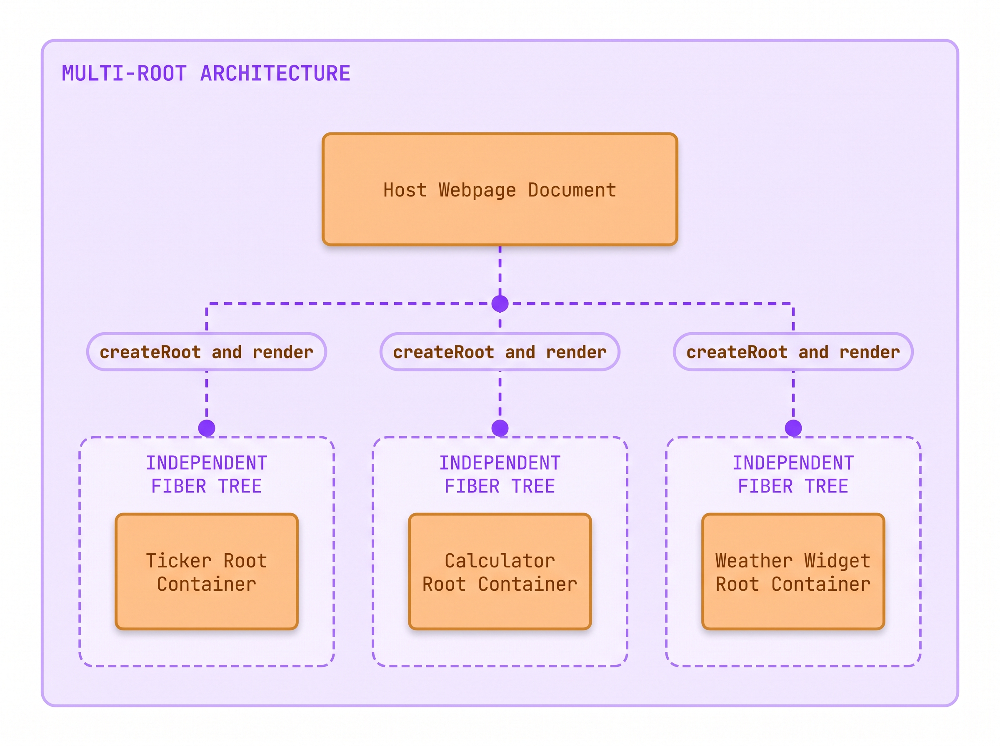
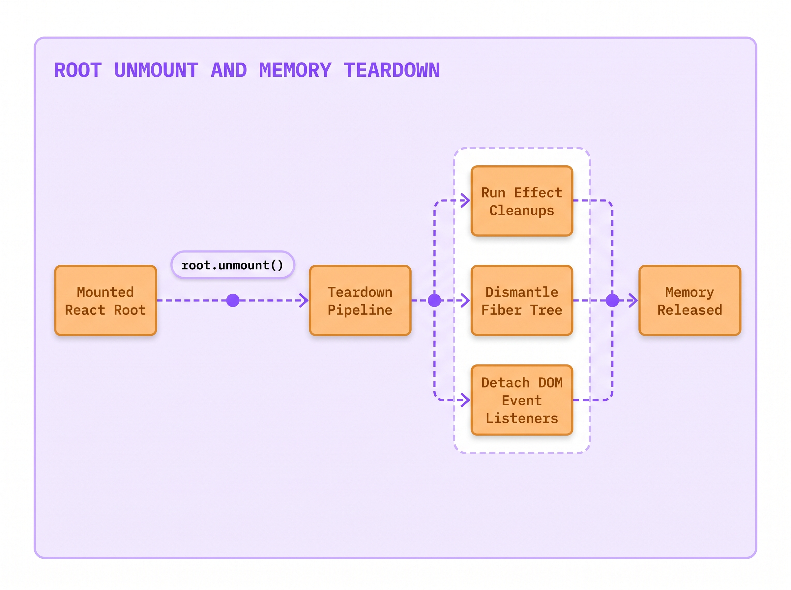

Marcus, a junior frontend engineer at The National Times, pushed a routine profile switcher to production on Friday afternoon.
Elena Vance, a digital subscriber, signed into her news account and saw her name appear in the top masthead.
When Elena switched to her family shared account, nine sections on the page updated, but the checkout pill stayed unchanged.
Elena renewed her annual subscription, and the billing gateway charged Marcus Vance instead of her own account.
Why did nine elements update correctly while the tenth element quietly kept the previous user credentials?
In plain JavaScript, updating the screen means finding and mutating every single matching browser node by hand.
Today you will uncover why imperative scripting breaks under scale, and how React guarantees that your screen never desynchronizes.
The Scene of the Crime: Imperative DOM Scripting
You already know how to build a webpage using HTML tags. You write an <h1> for a headline or a <p> for a paragraph, save the text file, and the browser displays it. That HTML file acts as your static blueprint.
But the browser does not just display your text; it brings it to life. When the browser reads your HTML blueprint, it constructs a live, invisible model in its memory called the Document Object Model (DOM). Think of your HTML as the architectural sketch, and the DOM as the actual, physical house that JavaScript can walk through, inspect, and rearrange.
Here is the catch with standard web development: if you are not using a modern framework, your JavaScript has to do all the remodeling by hand.
When user data changes, such as a subscriber switching accounts, the DOM does not automatically detect the change. Instead, your JavaScript must manually climb through that live tree of elements, hunt down the exact <p> or <span> holding the old text, and physically overwrite its contents. If your application displays that subscriber name in ten different places on the screen, your script is forced to execute ten separate, tedious search-and-replace missions just to keep the interface accurate. Forgetting even one query leaves corrupted, stale data on screen.
Here is the exact vanilla JavaScript function that Marcus wrote to handle account switching on The National Times masthead:
✓ 3 nodes updated to Elena✕ #sticky-checkout remained Marcus
Fig 1.1: Live browser viewport of The National Times masthead after Marcus's vanilla script runs. While the greeting, avatar, and banner update to Elena Vance, the forgotten checkout pill quietly preserves Marcus Vance.
When you examine the rendered viewport above, the structural flaw becomes immediately visible on screen. Marcus remembered to query #user-banner .name, #user-avatar, and .welcome-msg, updating the welcome greeting and avatar cleanly. But because the sticky checkout pill lived in a different file authored by another team three months earlier, he never knew it existed. The JavaScript engine ran without throwing a single error, yet the screen entered a corrupted, hybrid state where Elena was greeted by name while Marcus Vance remained active in the billing gateway.
This breakdown is not an isolated developer mistake; it is the mathematical consequence of imperative programming. In an imperative system, you write step-by-step instructions telling the browser how to change each individual element. As your product adds new features, the number of manual synchronization paths between user actions and screen elements multiplies exponentially. The official React documentation directly warns against this architectural trap:
Manipulating the UI imperatively works well enough for isolated examples, but it gets exponentially more difficult to manage in more complex systems. Imagine updating a page full of different forms like this one. Adding a new UI element or a new interaction would require carefully checking all existing code to make sure you haven't introduced a bug (for example, forgetting to show or hide something).
React Official Documentation (Reacting to Input with State), documentation official/React 19 Sept 2026/react.dev/src/content/learn/reacting-to-input-with-state.md
To prevent this exponential complexity, modern software architecture requires abandoning manual step-by-step DOM mutations entirely.
The Architectural Breakthrough: Declarative Components
Instead of telling the browser step-by-step instructions on how to mutate individual nodes, React introduces a completely different mental model known as declarative programming. Under this paradigm, you never write queries to hunt down existing elements. Instead, you declare what the user interface should look like for any given state, and you let the React engine handle all DOM manipulations automatically.
Think of declarative UI as a mathematical function: . Your user interface is simply the visual projection of your underlying data. When the data changes from User A to User B, React calls your function again with the new data and projects the updated result directly onto the screen.
RIGHT: single source of truth projects state to all elements simultaneously
8}
manual-vs-declarative
01-02 · manual-vs-declarativeUI = f(state)
switchUser('Elena Vance')
VS
Manual DOM
#user-bannerElena
#user-avataravatar.png
.welcome-msgElena
#sticky-checkoutMarcus
Declarative React
#user-bannerElena
#user-avatarElena
.welcome-msgElena
#sticky-checkoutElena
Fig 1.2: Symmetrical State Audit comparing imperative DOM queries with declarative React. In declarative React, updating state projects changes to all bound elements simultaneously with zero drift.
In the component and audit above, notice that the subscriber name user.fullName is bound directly into both the welcome banner and the checkout pill inside the exact same function. There is no document.querySelector, no textContent assignment, and no possibility of updating one element while forgetting the other. If user contains Elena Vance, both elements are guaranteed to display Elena Vance simultaneously.
To fully master this paradigm, we must break down the foundational primitive of React: the Declarative Component.
1. Technical Nomenclature & Syntax Decoding
In the code above, function Masthead({ user }) defines a component. A component is a JavaScript function that accepts an input object containing data (known as props, short for properties) and returns a description of the user interface written in JSX (JavaScript XML). The curly braces {user.fullName} tell the React compiler to escape from markup mode into JavaScript evaluation mode, calculating the live string value during rendering.
2. Tactile Physical Analogy
Think of imperative DOM scripting like an artist drawing an animated cartoon on paper with an eraser. If the character changes shirts, the artist must manually locate every single frame, erase the old shirt with rubber, and redraw the new shirt line by line. If the artist overlooks one drawing in the stack, the character flickers between red and blue shirts. By contrast, a declarative React component is like a modern digital camera taking a still photograph. You arrange your actors in the room (your state), press the shutter button, and the camera captures the entire scene in a single instant. You never redraw pixels by hand; you simply change the actors and take a fresh picture.
3. The "Why We Suffered Before" Contrast
Before declarative component libraries arrived, web applications were riddled with "ghost bugs" and memory leaks. Developers had to write custom glue code connecting event listeners to DOM mutations. When a user signed out, teams had to remember to clean up old event handlers, clear cached nodes, and reset text values. In large codebases with dozens of engineers, synchronization drift was inevitable. Declarative components eliminated this entire category of bugs by turning UI into a pure, predictable derivation of data.
4. The Physical Runtime Engine Routine
What does the browser actually execute when you return JSX? The browser engine does not understand JSX natively. During your project build step, a compiler transforms <header className="masthead"> into a standard JavaScript function call: React.createElement('header', { className: 'masthead' }, ...). When this function runs in memory, it returns a plain, lightweight JavaScript object describing that DOM node. React collects these objects into an in-memory blueprint and takes full responsibility for translating them into real browser DOM elements.
Under the Hood: The Virtual DOM and Fiber Reconciliation
When you first hear that React re-renders components when data changes, an intuitive alarm bell rings in every experienced engineer's mind. If rebuilding real browser DOM elements is one of the slowest operations in computer science, how can React throw away previous views and recalculate the interface on every keystroke without freezing the main browser thread?
The answer lies in React's in-memory staging area known as the Virtual DOM.
When you write JSX, React does not touch the real browser layout engine immediately. Manipulating native browser elements triggers layout recalculations, style re-computations, and screen repainting. If you mutate ten separate DOM nodes in sequence, the browser may recalculate geometry multiple times (an expensive performance bottleneck called layout thrashing).
To prevent this penalty, React performs its calculations inside memory using plain JavaScript objects. Let us inspect what your JSX actually looks like inside the engine:
Plain JavaScript object created in microseconds with minimal memory overhead
Creating and comparing plain JavaScript objects takes microseconds. When Elena Vance switches accounts, React calls Masthead({ user: elena }) in memory, generating a brand new virtual element tree.
Once the new virtual tree is constructed, React compares the newly returned virtual tree against the tree from the previous render to isolate the exact properties and text nodes that changed (a comparison routine known as reconciliation). React pinpoints that only the text nodes inside the banner and the aside changed, while the outer <header> container remained completely untouched.
Only after this comparison is finished does React enter its commit phase, applying the absolute minimum number of mutations directly to the real browser DOM in one fast batch.
DO NOT DO THIS: Imperative DOM updates scatter state across disconnected handlers
DO THIS: Declare UI as a direct projection of props in a single component tree
App.jsx
1exportfunctionUserBadge({ user }) {
2return (
3 <div className="user-badge">
4 <span className="name">{user.name}</span>
5 <span className="role">{user.role}</span>
6 </div>
7 );
8}
The Senior Interview Masterclass: Busting the Speed Myth
In senior technical interviews, interviewers frequently test whether a candidate truly understands React's engine architecture or merely repeats marketing slogans from tutorials. One of the most common elimination questions sounds deceptively simple:
"If direct DOM manipulation takes 0.01 milliseconds and React takes 0.2 milliseconds to allocate virtual objects and diff them, why did the entire industry switch to React? Is React faster than the DOM?"
If a candidate answers, "React is faster than the DOM because the Virtual DOM is fast," the interview is effectively over. The interviewer knows the candidate does not understand the browser engine.
Direct, hand-tuned DOM scripting is always faster than React in raw microbenchmarks. When you write document.getElementById('total').textContent = '$50', the JavaScript engine directly mutates a single property on an existing C++ object in the browser core. React, by contrast, must execute component functions, instantiate virtual element objects, traverse the Fiber tree, run diffing algorithms, and then execute that exact same C++ DOM property mutation anyway. React does strictly more computational work than a single manual DOM update.
Why, then, did the entire software industry adopt React?
The reason is that human software engineering teams do not write optimal manual DOM code at enterprise scale.
In a production application with hundreds of thousands of lines of code, dozens of asynchronous network requests, web sockets, modals, and real-time feeds, human developers cannot track every possible state combination by hand. To make vanilla JavaScript as fast as React in production, you would have to write your own custom diffing layer, track previous state in memory, batch your DOM writes, and avoid layout thrashing across fifty engineers. You would essentially spend five years building a buggy, half-finished version of React.
React provides predictable, deterministic performance by default. It may not be faster than the theoretical ceiling of hand-crafted assembly-level DOM code, but it is infinitely faster than the slow, layout-thrashing, memory-leaking code that humans actually write under real-world deadlines.
Where you will meet this
User Authentication & Session Switches: Updating profile mastheads, permission badges, and avatar menus simultaneously across deep application layouts.
E-Commerce Shopping Carts: Synchronizing item counts, subtotal badges, slide-out drawer tallies, and floating checkout pills from a single cart state.
Real-Time Dashboards: Reflecting streaming financial ticker updates or notification counters across multiple widgets without DOM selector spaghetti.
Complex Multi-Step Forms: Conditionally showing, hiding, and validating dependent input fields based on previous answers without manual class toggles.
Glossary
Declarative UI: A programming paradigm where you describe what the screen should look like for a given state, leaving the step-by-step browser DOM operations to the underlying engine.
Imperative UI: A programming model where you write explicit instructions commanding the browser how to locate, create, mutate, and remove individual DOM elements.
Component: A reusable, self-contained JavaScript function that accepts inputs (props) and returns a description of a user interface written in JSX.
Virtual DOM: A lightweight, in-memory tree of plain JavaScript objects representing the desired structure of the real browser DOM.
Reconciliation: The internal comparison process where React diffs the newly returned virtual element tree against the previous tree to compute the minimal set of real DOM updates.
Layout Thrashing: A performance catastrophe caused by alternating between reading and writing DOM properties, forcing the browser layout engine to repeatedly recalculate page geometry.
Summary
The Declarative Mental Model
The transition from imperative DOM scripting to declarative React represents a permanent shift from manual mutation to mathematical projection. Understanding this foundation is what separates engineers who copy syntax from architects who design resilient systems.
❒ The Imperative Scaling Collapse
Manual DOM queries create tight coupling between JavaScript logic and HTML selectors:
(a) Renaming a class or ID in markup silently breaks disconnected JavaScript handlers. (b) Adding a new UI element requires auditing all existing event handlers to ensure the new node receives updates. (c) As state interactions multiply, synchronization drift is mathematically guaranteed.
Principles to remember:
➔ NEVER query the browser DOM directly inside a React component using querySelector or getElementById. ➔ ALWAYS treat your user interface as a pure visual projection of underlying state data.
❒ The Declarative Guarantee
React unifies state and presentation into an automated synchronization loop:
(a) You define the complete visual structure of your component in JSX for any given prop input. (b) When data changes, React evaluates the component function to construct a fresh virtual element tree. (c) The reconciliation engine computes the minimal diff and flushes changes to the real DOM in a single optimized batch.
Operational rule:
➔ IF a piece of data affects what the user sees, THEN place that data in state or props so React can track its updates automatically.
DO NOT DO THIS: Query DOM elements across disparate event handlers to imperatively patch text and classes by hand.
DO THIS: Declare your complete UI structure in JSX and let React synchronize the DOM nodes automatically from state.
App.jsx
1functionSubscriberBadge({ name, tier }) {
2return (
3 <aside className={`badge ${tier}`}>
4 <span className="name">{name}</span>
5 <span className="tier">{tier}</span>
6 </aside>
7 );
8}
Imperative DOM Scripting (Plain JavaScript)
Declarative Component Model (React 19)
Mental Model
Step-by-step mutation commands telling the browser how to change elements
High-level data declaration describing what the interface should look like
DOM Synchronization
Manual developer responsibility via queries (querySelector, getElementById)
Automated engine responsibility via virtual tree diffing and reconciliation
Scaling Complexity
Exponential defect surface ( manual sync paths as features expand)
Constant synchronization guarantee ( regardless of tree size)
Raw Microbenchmark Speed
Marginally faster in single-node updates due to zero abstraction overhead
Adds small memory and diffing overhead to guarantee cross-app consistency
Failure Mode
Silent desynchronization (some elements update while others display stale state)
Deterministic rendering (entire component tree renders the latest data snapshot)
Lecture 02: How We Start a Project Without the Bloat
Imagine this scenario:
Julian Torres, an associate developer at The National Times, prepared the Election Night live results desk on Tuesday afternoon.
Digital editor Elena Vance warned him that three hundred thousand readers would load the live election results on mobile phones.
Julian spun up a client-only single-page application using an old tutorial, deploying a blank root div to production.
When voting closed, mobile readers on cellular networks stared at a blank white screen for over four seconds.
Why did the live page take four seconds to paint text when the underlying JSON payload was only twelve kilobytes?
In a bare client application, the browser cannot fetch data until it downloads, parses, and executes the entire JavaScript bundle.
Today you will uncover how modern bundlers build React projects, and how to choose the right foundation without bloat.
The Crime Scene: Two Extremes on Election Night
You already know how to write a React component. You define a function, return JSX markup, and expect React to project that structure into the browser DOM.
When developers prepare to launch a new application, they face an immediate fork in the road: what command do you run in your terminal to create the project? For years, online tutorials told everyone to run npx create-react-app, which is now officially deprecated. The React team divides modern frontend setup into two clear paths: Client-Side Build Tools and Full-Stack Frameworks. Your choice depends on where your HTML is created.
A Client-Side Build Tool (such as Vite) builds applications that run entirely inside the user's browser. This architecture is called Client-Side Rendering (CSR). The web server sends an empty HTML shell with a <script> tag. The user's browser downloads the JavaScript bundle and builds the entire interface locally. Client-side tools are fast to develop and cheap to host. They are ideal for private dashboards, internal tools, and interactive widgets.
A Full-Stack Framework (such as Next.js or React Router v7) solves the blank-screen problem by pre-rendering your components into complete, readable HTML before sending them over the network. Frameworks deliver HTML using two primary strategies:
Static Site Generation (SSG): You run a build command ahead of time. It generates finished HTML files that sit on a global CDN and load in milliseconds.
Server-Side Rendering (SSR): When a user visits a URL, a server runs your React components on demand. It injects live data into the markup and sends back complete HTML. The user sees headlines and articles immediately without waiting for client JavaScript to run.
Here is the tension that traps engineering teams: developers either choose too little tooling or too much tooling.
Julian wanted to keep things simple on election night. He avoided frameworks and built a bare, client-only single-page application. When mobile readers clicked breaking news alerts, their phone downloaded an empty <div id="root"></div>. The phone could not display a single vote count yet. It had to download a heavy 1.6 megabyte JavaScript bundle first. Then the browser parsed the code and mounted React. Only then did the app start fetching election data over the cellular network. Readers stared at a blank white screen for four seconds and gave up.
Meanwhile, another engineering team at The National Times built an internal schedule tool for three staff editors. To follow modern trends, they set up a heavy Node.js server with streaming server rendering. The three editors only needed a simple private dashboard behind a company login. Instead, the team spent weeks fixing Docker containers, chasing memory leaks, and paying high cloud bills for servers that sat idle all day.
Both teams failed because neither understood the fundamental trade-offs of modern project setup.
Here is the minimal command that modern engineers run when creating a client-only React application from scratch:
Fig 2.1: React Component Explorer showing the unbloated project tree of a fresh Vite and React 19 scaffold. The live stage displays the canonical App.tsx starter template mounted into the root container with sub-millisecond local compilation.
A fresh Vite project contains zero configuration bloat. It provides only the essential files: an index.html file at the project root, a minimal vite.config.ts, a package.json, and the starter source files inside src/ (main.tsx, App.tsx, and App.css). There are no thousand-line Webpack configuration files, no hidden scripts, and no server runtimes. This lightweight structure represents the first half of your architectural decision: the client-side build tool.
The Modern Build Tool: Instant Start with Vite
When you start your local development server, older bundlers and modern build tools take completely different paths. In older setups, your build tool had to read every file in your project first. It compiled your JSX, resolved imports, and built one giant bundle before the dev server could even boot. If your project had five hundred components, you waited thirty seconds every morning just to see your home page. Editing a single CSS rule forced you to wait through another slow build cycle.
A modern build tool like Vite permanently eliminates this startup delay by dividing the development workflow into two distinct categories: dependencies and source code.
First, dependencies (like react and react-dom) are pre-bundled using esbuild. Esbuild is written in the Go language and runs up to one hundred times faster than JavaScript bundlers. Second, your application source code is never bundled during development at all. Instead, Vite serves your files directly over HTTP using the browser native ES Modules (ESM) standard.
When you open your browser to http://localhost:5173, the browser requests index.html. When the browser engine encounters <script type="module" src="/src/main.tsx">, it reads the file and sees import LiveDesk from './LiveDesk'. Instead of waiting for a massive bundle, the browser sends an HTTP request asking the Vite server specifically for LiveDesk.tsx. Vite transforms only that single file on the fly and returns it in microseconds.
Here is the exact component that Julian should have mounted to display the election results cleanly without server baggage:
6 <h2>Metro Transit Vote: Live Results Update</h2>
7 </header>
8 <div className="metric-row">
9 <span>Counted: {percent}%</span>
10 </div>
11 </div>
12 );
RIGHT: lightweight component mounted without server runtime overhead
13}
The LiveDesk component accepts two props: status and percent. When you edit the headline text in your editor, Vite detects the save immediately using your operating system file watcher. Instead of rebuilding the whole app, Vite sends only the changed file over a local WebSocket connection (a feature known as Hot Module Replacement or HMR). The updated component swaps into the running page in twelve milliseconds without reloading the browser or losing your current screen state.
The tool is named Vite, from the French word for fast (pronounced veet). When you run npm create vite@latest, npm starts an interactive setup prompt that downloads a clean template. The flag --template react-ts configures TypeScript support alongside React 19 JSX compilation plugins out of the box. Running npm run dev starts the instant local development server, while npm run build compiles minified static assets for deployment.
Think of older monolithic bundlers like a print shop that insists on binding an entire hardbound encyclopedia before letting you read a single sentence. If you spot a typo on page four, the printer tears apart the binding, re-prints every volume, and re-binds the entire encyclopedia from scratch. By contrast, a native ES module dev server is like an automated digital index card dispenser. When you sit at your desk, the dispenser hands you only the single card you requested. If you correct a word on that card, the dispenser swaps that single card in your hand without disturbing the rest of the deck.
Why did developers suffer before modern build tools? In 2016, setting up a React project required hand-configuring Babel, Webpack, ESLint, and dev servers. The React team introduced Create React App (CRA) to unify these tools into a single package (react-scripts). CRA was a triumph that onboarded an entire generation of frontend engineers. But over time, CRA became a frozen monolith. Its underlying Webpack configuration grew slow, builds became sluggish, and it had no mechanism to support modern React features like streaming server rendering, React Server Components, or route-level data prefetching. On February 14, 2025, the React team officially sunsetted Create React App.
The official deprecation notice directly addresses why the React ecosystem moved away from CRA:
Although Create React App makes it easy to get started, there are several limitations that make it difficult to build high performant production apps... Since Create React App currently has no active maintainers, and there are many existing frameworks that solve these problems already, we have decided to deprecate Create React App.
When you run npm run build, Vite switches from development mode to an optimized production build. It parses your TypeScript and JSX, removes unused code (an optimization known as tree shaking), and splits your app into small, hashed files inside a dist/ folder. You can upload this dist/ folder to any static host, such as Cloudflare Pages, GitHub Pages, or an AWS S3 bucket, with zero servers to manage.
The Hidden Iceberg: Why Client-Only SPAs Hit a Wall
Vite provides instant server startup, rapid hot reloading, and zero server maintenance. Yet the official React documentation explicitly recommends starting new projects with a framework. Election night at The National Times exposed the physical limitation that triggered this recommendation.
When you deploy a pure client-side single-page application, you ship an architectural limitation: your server only delivers a blank HTML skeleton. When a reader requests https://nationaltimes.com/election-live, the web server returns the following static HTML document:
index.html
1<!DOCTYPE html>
2<html lang="en">
3 <head>
4 <meta charset="UTF-8" />
5 <title>The National Times</title>
6 </head>
7 <body>
8 <div id="root"></div>
WRONG: empty container forces client to download JS before painting any content
Fig 2.2: Symmetrical State Audit comparing a client-only Vite SPA against a full-stack framework under mobile network conditions. The client-only app triggers an empty initial HTML payload, sequential waterfalls, and a 3.8-second delay before the first paint.
The performance audit exposes the structural flaw of client-only rendering. When a reader on a mobile phone clicks an election link, the browser cannot display anything meaningful right away because the initial HTML contains no articles, no headlines, and no live results.
The browser gets stuck in a slow, six-step relay race before the user sees anything:
Download HTML: The browser fetches the empty HTML file.
Download JavaScript: The browser finds the <script> tag and downloads the large JavaScript bundle.
Parse code: The browser engine reads, parses, and compiles all that JavaScript.
Mount React: React runs createRoot and builds the component tree in memory.
Fetch data: Your component finally mounts and triggers a fetch call or useEffect.
Wait for network: The request travels across the network to the API server and returns the live numbers.
Only after step six finishes can React paint candidate names and vote counts on the screen. If a reader is on a slow cellular connection, each step adds a delay. That is why readers stared at a blank screen for four painful seconds.
This chain delay is called a network request waterfall. If child components also fetch their own separate data after mounting, the waterfall cascades even deeper: parent mounts, parent fetches, child mounts, child fetches. On high-latency mobile networks, each round trip adds hundreds of milliseconds, resulting in a frustrating white screen.
Search engine crawlers and social media preview bots also suffer. When someone shares your article on social media, the crawler fetches only the raw HTML text. It does not run heavy JavaScript bundles. Because your HTML contains only an empty <div id="root"></div>, the bot sees zero text. Your shared link appears as a broken, blank preview card without headlines or images.
This breakdown exposes the Ad-Hoc Framework Trap.
When teams start with a bare build tool and hit these walls, they try to fix each problem by hand. They write custom routers and loading spinners. Then they add custom data fetchers and caching code. Within a year, the team has accidentally built its own buggy, unmaintained framework.
The official React documentation directly warns against this trap:
Starting from scratch is an easy way to get started using React, but a major tradeoff to be aware of is that going this route is often the same as building your own adhoc framework. As your requirements evolve, you may need to solve more framework-like problems that our recommended frameworks already have well developed and supported solutions for.
React Official Documentation (Build a React App from Scratch), documentation official/React 19 Sept 2026/react.dev/src/content/learn/build-a-react-app-from-scratch.md
Instead of reinventing the wheel, production teams adopt frameworks that include routing, pre-rendering, and data loading out of the box.
The Full-Stack Spectrum: Frameworks Without Server Bloat
When developers hear the phrase "full-stack framework", an immediate objection surfaces: "I do not want to manage a Node.js server! I just want to host static files on a global content delivery network."
This objection comes from an old misunderstanding. In modern React, a full-stack framework does not force you to run a backend server.
Every major React framework, including Next.js and React Router v7, gives you four clear ways to deliver HTML to your users:
Client-Side Rendering (CSR): The server sends a nearly blank HTML file. The user's phone downloads the JavaScript bundle and builds the entire screen locally.
Static Site Generation (SSG): You run a build command ahead of time. It generates finished HTML files for every page. These static files live on a global CDN and load in milliseconds without any server compute.
Server-Side Rendering (SSR): When a user visits a URL, a server runs your components on demand, injects fresh data, and sends back complete HTML. The user sees headlines and live results immediately, without waiting for client JavaScript to run.
React Server Components (RSC): Components that stay entirely on your server. They query databases directly and stream rendered UI to the browser without adding extra JavaScript weight to the user's download.
You can build your app with nested pages and fast data loading. Then you run one export command. The framework creates plain HTML and JavaScript files ready for any CDN. You upload them to Cloudflare Pages or an AWS S3 bucket. You get fast initial paints and full search indexing with zero monthly server bills.
The official React documentation highlights this flexibility:
All the frameworks on this page support client-side rendering (CSR), single-page apps (SPA), and static-site generation (SSG). These apps can be deployed to a CDN or static hosting service without a server. Additionally, these frameworks allow you to add server-side rendering on a per-route basis, when it makes sense for your use case.
React Official Documentation (Creating a React App), documentation official/React 19 Sept 2026/react.dev/src/content/learn/creating-a-react-app.md
Here is how modern framework route loaders solve the network waterfall problem. In a framework like React Router v7, data loading lives alongside the route definition rather than hidden inside a component hook:
RIGHT: parallel data fetch initiated before component rendering starts
6return { results, status };
7}
The standalone loader function runs before any component mounts. When a reader clicks a link to the live desk, the framework starts both network requests immediately in parallel (Promise.all). This eliminates the sequential waterfall completely.
When the server or build script renders this route, it outputs complete, semantic HTML. When the reader's browser downloads the document, headlines and live results paint on screen in under four hundred milliseconds.
Once the HTML is on screen, the browser downloads a small JavaScript file. React reads this script and connects it to the HTML already visible on the page. It attaches click listeners and internal state so buttons become active (a process known as hydration). Because the HTML was already visible, the user never sees a white flash or shifting buttons.
Under the Hood: The Modern Scaffolding Decision Matrix
Choosing between a build tool and a full-stack framework depends on concrete engineering requirements rather than social media trends. When evaluating a new project, assess your architecture against four practical questions:
Pages and URLs: Does your app have multiple screens and nested routes?
Data Fetching: Does your data need to load in parallel before the screen paints?
Search and Social: Do search engines and social media bots need to read your content?
Server Budget: Can you deploy static files to a CDN, or do you have a server runtime?
Here are the four standard commands you should keep in your engineering toolkit, categorized by project scope:
DO NOT DO THIS: Start a new project using deprecated, unmaintained tooling packages
code.txt
1npx create-react-app my-app
Deprecated since February 2025; slow builds and no React 19 feature support
DO THIS: Start a client-only application or standalone widget with Vite
Instant ESM dev server, perfect for dashboards and SPAs
DO THIS: Start a public-facing web application with a full-stack framework
code.txt
1npx create-react-router@latest my-app
Production-grade routing, parallel data loaders, and static export options
DO THIS: Start a universal cross-platform mobile application with Expo
code.txt
1npx create-expo-app@latest my-app
Universal React Native applications for iOS, Android, and web
During team planning, evaluate your architecture against these clear requirements:
Choose a Client Build Tool (Vite / Rsbuild) if:
- You are building an internal tool or private dashboard behind a login screen where search engines never look. - You are building a standalone widget (like a calculator or audio player) embedded inside an existing website. - You are building an offline-first app where all data stays locally in the browser. - Your backend is already an independent REST or GraphQL API built by a separate team.
Choose a Full-Stack Framework (React Router v7 / Next.js) if:
- Your site is public-facing and depends on search engine rankings, social preview cards, and fast mobile loading. - Your app has multiple pages with nested layouts, tabbed navigation, and browser history. - You want to fetch data in parallel before components mount, avoiding blank screens and spinners. - You plan to use React 19 Server Components to fetch data directly without writing boilerplate API routes.
The Senior Interview Masterclass: Defending Your Architecture
In staff and senior frontend engineering interviews, interviewers frequently probe your understanding of project setup with questions designed to catch dogmatic developers:
"The official React docs say we should always start with a framework. If an engineer on your team proposes using Vite for our next project, would you reject their proposal? Why or why not?"
If a candidate answers, "Yes, I would reject it because the React team says frameworks are always better," the interviewer marks the candidate down as an echo-chamber junior who follows authority without understanding technical trade-offs.
A senior engineer evaluates the cost of every architectural choice. Full-stack frameworks add rigid conventions: strict folder naming, specialized file structures (like page.tsx), and proprietary routing systems. If your project is a five-component widget embedded inside an existing Rails or Django application, adding a full framework introduces unnecessary complexity.
Similarly, setting up server rendering for a private internal tool behind corporate login wastes engineering effort. Search crawlers cannot access private tools, and internal users do not need social share previews. A lean Vite single-page application deployed to a static storage bucket starts in milliseconds, costs pennies, and eliminates server maintenance entirely.
Where you will meet this
Interactive News Graphics: Building charts, calculators, or maps embedded into articles using a small Vite script.
Company Internal Tools: Building staff directories and admin consoles behind a company login.
Public Media Websites: Launching newspaper front pages, online stores, and blogs that need fast mobile loading and social sharing.
Cross-Platform Mobile Apps: Building universal mobile and web apps using Expo and React Native with shared code.
Glossary
Build Tool: A local tool (like Vite) that runs a fast development server and bundles your code into static files for production.
Full-Stack Framework: A complete application system (like Next.js or React Router v7) that manages pages, data loading, routing, and HTML pre-rendering.
Hot Module Replacement (HMR): A development feature that swaps edited code into the running browser in milliseconds without refreshing the page or wiping your data.
Client-Side Rendering (CSR): Loading an empty HTML shell and letting the user's browser download JavaScript to build the entire screen.
Static Site Generation (SSG): Creating finished, readable HTML files at build time so pages load instantly from a global CDN without server compute.
Server-Side Rendering (SSR): Running components on a server when a user requests a URL, so the browser receives finished HTML with text ready to read.
React Server Components (RSC): Components that run exclusively on the server, querying databases directly without sending extra JavaScript code to the user's browser.
Hydration: The moment React in the browser attaches click listeners and internal logic to existing HTML sent by the server, turning a static page interactive.
Summary
Modern Project Architecture
Choosing the foundation for a new React project requires balancing local developer ergonomics against production user experience. Understanding when to use a lean build tool versus a full-stack framework is an essential skill for senior software engineers.
❒ The Scaffolding Spectrum
Client-side build tools provide an agile, unencumbered foundation for client-driven applications:
(a) Vite leverages browser native ES modules to eliminate development server startup latency. (b) Hot Module Replacement updates edited components in memory within milliseconds. (c) Production builds compile into static files deployable to edge content delivery networks with zero server runtime maintenance.
Principles to remember:
➔ NEVER start a new project using deprecated Create React App. ➔ ALWAYS evaluate whether your project requires public search engine discovery and pre-rendered social media cards.
❒ The Framework Invariant
Full-stack frameworks eliminate the ad-hoc framework trap by unifying routing, data fetching, and rendering:
(a) Route loaders fetch data in parallel before component mounting, eliminating client-side network request waterfalls. (b) Pre-rendered HTML provides instant visual paint and complete search engine indexability. (c) Frameworks support static site export, allowing you to deploy to static hosting without managing a Node.js server.
Operational rule:
➔ IF an application has multiple public pages requiring SEO and fast mobile initial paint, THEN start with a full-stack framework. ➔ IF an application is an authenticated internal tool or embedded widget, THEN start with a lightweight build tool like Vite.
DO NOT DO THIS: Rely on legacy Create React App which bundles unmaintained Webpack configurations
code.txt
1npx create-react-app election-desk
DO THIS: Scaffold modern projects with Vite using native ES modules and zero bloat
Sends an empty <div id="root"> </div> shell; the browser must run JavaScript before anything appears
Sends finished HTML with text and data so the screen paints immediately
Data Fetching
Runs inside component hooks after mounting, creating slow network waterfalls
Fetches all route data in parallel before components mount, avoiding waterfalls
Search and Social
Search engines and social bots see a blank page without text or preview cards
Search engines and social bots read complete headlines, text, and social preview tags
Server Operations
Zero servers to maintain; deploys as plain static files to any CDN or storage bucket
Can export static files for CDNs or run on Node and edge servers for dynamic pages
Ideal Use Case
Private admin panels, embedded widgets, offline tools, and local apps
Public websites, news desks, e-commerce stores, and content-rich platforms
Lecture 03: The Capitalized Function That Returns HTML
Imagine this scenario:
Maya Lin, an associate developer at The National Times, built an author byline card for breaking news articles.
The byline card showed the author photo and their full name. It also showed their job title and the publication date.
Maya wrote <authorBadge author="Marcus" /> in lowercase, expecting React to run her component function.
In production, the article rendered a blank empty gap where the journalist credentials belonged.
When she inspected the DOM, the browser displayed an inert <authorBadge></authorBadge> tag with zero children.
Why did the browser treat her component function as an unknown HTML element instead of executing its code?
Today you will uncover the rules of component anatomy, and why capitalization determines whether your code runs.
The Crime Scene: The Silent Unknown Tag
You already know how to write standard JavaScript functions. You declare a function name and pass parameters. The function calculates values and returns a result. You also know how to write HTML tags like <div> and <p> to structure documents in a browser.
When developers write their first React application, they encounter a function that appears to merge both worlds: a JavaScript function that returns HTML-like markup. But when Maya Lin published the breaking news byline card for The National Times, the interface collapsed silently.
Maya defined a JavaScript function named authorBadge. She expected React to execute the function and display the journalist profile. Instead, readers saw an empty space below the headline. When Maya opened browser DevTools to inspect the DOM tree, she did not find an error in the console. Instead, she found a literal, lowercase <authorBadge></authorBadge> element sitting completely empty in the page.
A React component is a JavaScript function that returns a description of user interface elements. You compose these functions together to build complex pages from small, isolated building blocks.
However, the build compiler and the browser engine do not guess your intentions. The JSX compiler relies on an explicit naming rule: component names must always start with a capital letter (PascalCase).
When the compiler encounters a tag starting with a lowercase letter, such as <byline> or <div>, it treats the tag as a built-in browser host element. The compiler transforms it into a string literal. When the tag starts with a capital letter, such as <Byline> or <ArticleCard>, the compiler treats it as a direct JavaScript variable identifier. It passes the function itself into the React runtime so React can execute your component.
Here is the exact component call that triggered the silent failure on the news desk:
Fig 3.1: React Component Explorer showing Byline correctly nested inside ArticleCard with file tree, component boundary tags, props chips, and authentic rendered newsroom UI.
When you examine the component explorer above, the intended architecture becomes visible immediately. The <ArticleCard /> container hosts the headline and nests the <Byline /> component. The byline receives its data through props. It displays the author photo and name. It also displays the author job title and publish time.
Because Maya wrote <byline> in lowercase, the JavaScript engine never executed her function. The browser created an HTMLUnknownElement in the live DOM. The browser did not know how to style or render <byline>, so it rendered an empty block with zero height.
Understanding this distinction requires mastering the three fundamental rules that govern every React component:
Capitalized Naming: The function name and JSX tag must start with an uppercase letter (Byline, never byline).
Top-Level Module Scope: You must never define a component function inside another component function.
Valid Return Value: The function must return valid markup, such as a JSX element, a Fragment, or null.
Under the Hood: The Capitalization Compiler Contract
When you write JSX in an editor, modern web browsers cannot run that syntax directly. Browsers understand standard JavaScript objects and functions, but they have no native parser for HTML tags inside JavaScript expressions.
Before your code reaches the browser, a build compiler transforms your JSX into standard JavaScript function calls. In modern React, the build compiler uses the automatic JSX runtime. The compiler scans your tags and decides what to output based entirely on the first letter of the tag name.
If the tag starts with a lowercase letter, the compiler emits a string literal: _jsx('byline', { author: 'Marcus Vance' }). When React processes this call, it sees a string. React assumes you are asking to create a native browser element like <div>, <span>, or <section>. React calls document.createElement('byline'), which produces an unknown DOM node.
If the tag starts with a capital letter, the compiler emits a direct variable identifier: _jsx(Byline, { author: 'Marcus Vance' }). Notice there are no quotes around Byline. React receives a direct pointer to your JavaScript function in memory. During the render phase, React executes Byline(props) to obtain the child elements.
Here is the corrected component implementation exported from its own dedicated file:
RIGHT: PascalCase component function returning semantic JSX markup
9}
JSX COMPILER & DOM EVALUATION AUDIT
EVALUATION: COMPONENT CASINGENGINE: JSX TRANSFORM
TAG DISPATCH: <byline /> vs <Byline />
VS
Lowercase Tag: <byline />
Compiler Transform
jsx('byline', { author })
Treated as string literal for host HTML element
Browser DOM Target
document.createElement('byline')
Produces inert HTMLUnknownElement in DOM
Component Function Call
Byline(props) → SKIPPED
React never invokes your function logic
✕ BLANK UNKNOWN ELEMENT
PascalCase: <Byline />
Compiler Transform
jsx(Byline, { author })
Passed direct function identifier reference
Browser DOM Target
Evaluates returned JSX tree
Creates valid semantic DOM elements
Component Function Call
Byline(props) → EXECUTED
Renders author avatar, name, and role
✓ EVALUATED COMPONENT
Fig 3.2: Symmetrical State Audit contrasting compiler output: lowercase tags become string literals creating blank HTMLUnknownElements, while PascalCase tags pass function identifiers that React executes.
In the compiler audit above, the two execution paths stand in sharp contrast. The lowercase tag produces a string literal, bypasses your component function entirely, and inserts an inert node into the DOM tree. The PascalCase tag preserves the function reference, invokes your code during rendering, and projects semantic HTML elements onto the screen.
To thoroughly understand this building block, we must examine the four foundational pillars of the React Component.
1. Technical Nomenclature & Syntax Decoding
The word component originates from system architecture, meaning an interchangeable part of a larger mechanism. In React, a component is declared using standard JavaScript function syntax: function Byline(props) { ... }. The parameter props is a plain JavaScript object holding all incoming attributes passed by the parent element. The name must use PascalCase (every word capitalized, such as ArticleCard or UserProfile). This capitalization separates custom components from lowercase native HTML tags.
2. Tactile Everyday Physical Analogy
Think of native HTML tags like standard pre-inked postal stamps sold by the post office. When you stamp <div> or <p>, the clerk stamps a standard official rectangle onto the envelope. You cannot teach that stamp new behaviors; it does only what the post office manufactured it to do. By contrast, a React component is like a custom 3D printing mold you carved in your own workshop. When you press <Byline />, the mold stamps out a complex assembly of an avatar circle, bold typography, and styled badges in a single press. Capitalizing the mold name tells the factory floor to fetch your custom blueprint rather than pulling a stock postal stamp from the drawer.
3. The "Why We Suffered Before" Contrast
Before components became the industry standard, web development suffered from extreme file fragmentation. Developers maintained HTML templates in one folder, styles in a second folder, and jQuery DOM scripts in a third folder. If an engineer changed a class name in the markup, the JavaScript file broke silently because its query selectors no longer matched. Components permanently resolved this problem by keeping markup, display logic, and state together in a single place. When you need to update how a byline looks or behaves, you edit one file: Byline.jsx.
4. The Physical Runtime Engine Routine
What does React do when it renders a component? When React executes your application, it maintains an internal tree of nodes called the Fiber tree. When React encounters _jsx(Byline, props), it allocates a Fiber node whose type property points directly to the Byline function. During the work loop, React calls Byline(props). The function evaluates and returns a child virtual element tree. React inspects those child elements, reconciles them against previous renders, and commits the calculated changes to the real browser DOM.
The Hidden Iceberg: The Nested Component Trap
Once engineers learn that components are regular JavaScript functions, they frequently fall into a catastrophic architectural trap: nesting component declarations inside other components.
During a late-night editorial deadline, an engineer at The National Times wanted to display a live reader comment counter inside the article view. To keep the helper function close to the article code, the engineer declared function CommentCounter() directly inside function ArticleView().
The component appeared to work on the first paint. But when readers started typing comments into the text box, every single keystroke caused the input field to lose focus. Keystrokes were dropped, text was lost, and readers could not submit comments.
Here is the exact code that caused the focus-loss disaster:
ArticleView.jsx
1exportdefaultfunctionArticleView() {
2functionCommentCounter({ count }) {
WRONG: function re-declared on every parent render
9 <input type="text" placeholder="Write a response..." />
10 </div>
11 );
12}
Why did declaring CommentCounter inside ArticleView cause the input field to lose focus on every keystroke?
To answer this question, you must examine how the JavaScript language executes functions in memory. Every time a parent component re-renders, the JavaScript runtime executes its function body from top to bottom.
When ArticleView runs, it encounters the function declaration function CommentCounter() { ... }. JavaScript allocates a brand-new function object at a fresh memory address. On render one, CommentCounter lives at Memory Address A. On render two, CommentCounter lives at Memory Address B.
When React compares the previous virtual tree against the new virtual tree (a comparison routine known as reconciliation), it checks whether the component type at that tree position is identical: prevFiber.type === nextFiber.type.
Because Memory Address A does not equal Memory Address B, React concludes that the old component was completely removed from the page and a totally different component was added in its place.
React destroys the old DOM subtree entirely, unmounting all child elements. It then creates a brand-new DOM node from scratch. When a native <input> element is destroyed and recreated in the DOM, the browser immediately discards its active cursor selection and keyboard focus. The user experiences a jarring flicker and loses their typing position on every keystroke.
The official React documentation explicitly warns against this pattern:
Components can render other components, but you must never nest their definitions... The snippet above is very slow and causes bugs. Instead, define every component at the top level.
React Official Documentation (Your First Component), documentation official/React 19 Sept 2026/react.dev/src/content/learn/your-first-component.md
To permanently eliminate this failure mode, always declare your component functions at the top level of your module. If a child component needs data from its parent, pass that data through props rather than relying on nested function closures.
9 <input type="text" placeholder="Write a response..." />
10 </div>
11 );
12}
When CommentCounter is declared at module scope, its function reference remains constant across all render cycles (prevFiber.type === nextFiber.type evaluates to true). React recognizes that the component identity has not changed. It preserves the existing DOM nodes in memory, updates only the text content that changed, and keeps the user's input focus perfectly intact.
The Return Value Contract: Pure Elements and Semicolon Hazards
Every React component must return something that React knows how to render. If a component function finishes executing without returning a value, JavaScript returns undefined. React 19 treats returning undefined as a runtime error because it usually indicates a forgotten return statement.
A valid React component can return:
A JSX Element: A description of a single DOM element or custom component (<div className="card" />).
A React Fragment: An empty wrapper tag (<>...</>) that groups multiple elements without creating an extra DOM wrapper node.
A Primitive Value: A string ("Breaking News") or number (42), which React renders as raw text nodes.
Nothing: null or false, which tells React to render nothing on screen without throwing an error.
Here is a subtle JavaScript syntax trap that catches both junior and senior developers: Automatic Semicolon Insertion (ASI).
In JavaScript, if you place a line break immediately after the return keyword, the parser automatically inserts a hidden semicolon before your next line:
BrokenReturn.jsx
1exportdefaultfunctionBrokenReturn() {
2return
JavaScript inserts a semicolon here: return;
3 <div className="alert">
4 Important editorial notice
5 </div>;
6}
WRONG: function returns undefined before reaching the JSX markup
Because JavaScript inserts a semicolon after return, the function returns undefined immediately. The JSX block below is completely ignored. To prevent this hazard, always place your opening tag on the same line as return, or wrap your multi-line markup in grouping parentheses:
SafeReturn.jsx
1exportdefaultfunctionSafeReturn() {
2return (
3 <div className="alert">
4 Important editorial notice
5 </div>
6 );
RIGHT: parentheses protect multi-line JSX from automatic semicolon insertion
7}
Wrapping your JSX in parentheses ensures that JavaScript treats the entire block as a single unified expression, guaranteeing that your markup reaches the React runtime cleanly.
The Senior Interview Masterclass: Architectural Rules of Components
In staff and senior engineering interviews, questions about component anatomy are rarely about basic syntax. Interviewers use component rules to test whether you understand the boundary between compile-time transformation and runtime reconciliation.
A common senior interview question asks:
"Why does React forbid calling components as regular functions inside JSX? What breaks if you write {Byline(props)} instead of <Byline {...props} />?"
A junior developer might answer that <Byline /> looks cleaner or that JSX requires tags.
A senior engineer explains the fundamental difference in engine lifecycle.
When you write <Byline {...props} />, you hand a virtual element descriptor to React. React takes responsibility for running the component. It allocates a dedicated Fiber node in the component tree. It attaches hooks (useState, useEffect) to that specific node, and it manages component error boundaries.
If you write {Byline(props)}, you bypass React entirely. You execute Byline as a plain helper function inside the parent component's execution frame.
This creates severe architectural consequences:
Hook Ownership Collapse: Any hooks called inside Byline are attached to the parent component's Fiber node rather than their own node. If Byline is called conditionally, it breaks the invariant that hooks must always be called in the exact same order.
Reconciliation Inefficiency: React cannot optimize or skip rendering Byline independently. When the parent re-renders, the entire helper function executes unconditionally.
DevTools Invisibility: React DevTools cannot display a component that was never registered as a component. The helper's output merges indistinguishably into the parent.
Where you will meet this
Design System Libraries: Creating reusable button, badge, and card components that teams share across applications.
Editorial Mastheads: Organizing complex news homepages into clear component trees, including navigation bars and weather widgets.
Interactive Comment Feeds: Structuring user discussion threads where parent article views host lists of nested comment cards.
Dashboard Analytics: Composing financial charts and data summary cards from reusable components.
Glossary
React Component: A JavaScript function whose name starts with a capital letter that returns React elements describing user interface structure.
PascalCase: A naming convention where the first letter of every word is capitalized (ArticleCard), mandatory for React component declarations.
Fiber Tree: The internal in-memory tree of nodes that React maintains to track component instances, hooks, and pending DOM mutations.
Reconciliation: The comparison routine where React diffs the newly returned virtual element tree against the previous tree to find only the exact nodes that changed.
Automatic Semicolon Insertion (ASI): A JavaScript parsing behavior where the engine automatically inserts semicolons at line breaks, requiring parentheses around multi-line return statements.
HTMLUnknownElement: The generic DOM interface instantiated by browsers when encountering unrecognized HTML tags, such as lowercase component names.
Summary
Component Anatomy and Rules
Mastering component anatomy requires treating components as pure functional building blocks governed by strict compiler and reconciliation contracts.
❒ The Capitalization Contract
Tag casing dictates compiler code generation:
(a) Lowercase tags compile into string literals (_jsx('tag')) targeting native host DOM elements. (b) Capitalized tags compile into variable identifiers (_jsx(Tag)) passing function pointers to React. (c) Mismatched casing creates empty HTMLUnknownElement nodes that fail to execute component logic.
Principles to remember:
➔ NEVER name a component with a lowercase first letter. ➔ ALWAYS use PascalCase for all custom component declarations and JSX tags.
❒ The Module Scope Invariant
Component function identity must remain stable across render cycles:
(a) Declaring a component inside another creates a new function memory reference on every parent render. (b) Unstable references force the reconciler to destroy and recreate the underlying DOM subtree. (c) Subtree recreation resets local component state and drops native input focus.
Operational rule:
➔ IF a component needs helper components, THEN declare those helpers at module scope and pass data via props. ➔ NEVER declare a component function inside the body of another component function.
DO NOT DO THIS: Define component functions inside another component or use lowercase tag names
App.jsx
1functionnewsFeed() {
2functionarticle() {
3return <div>Article item</div>;
4 }
5return <article />;
6}
DO THIS: Declare capitalized components at top-level module scope and compose them cleanly
React invokes function Component(props) to evaluate child elements
Declaration Scope
Predefined by the W3C HTML specification and browser engine
Defined by the developer at top-level JavaScript module scope
State and Lifecycle
Managed natively by the browser layout engine
Managed by React Fiber reconciler via hooks and component trees
Lecture 04: How the Root Component Lands on the Page
Imagine this scenario:
Samira Vance, a platform engineer at The National Times, prepared the breaking news live wire widget on Monday morning.
The widget sat inside an existing editorial page containing a static fallback ticker inside <div id="root">.
Samira called createRoot(container).render(<App />) to activate live updates for readers.
The moment the script executed, the existing ticker vanished into a blank white box before rendering.
Furthermore, an inline script directly below render() tried to read the headline and crashed with null.
Why did mounting React wipe out the existing fallback markup and fail to populate the DOM synchronously?
Today you will uncover how createRoot bridges JavaScript to the DOM, and how React schedules your initial render.
The Crime Scene: The Vanishing Ticker and the Null Element
You already know how to author React components. You write a function, return JSX elements, and compose child components into a structured visual hierarchy. But components authored in .jsx or .tsx files are simply JavaScript functions in memory. They do not attach themselves to the browser window automatically.
When developers inspect modern build templates, they find an index.html file containing an empty container: <div id="root"></div>. Somewhere in their project scripts, a single function bridges that empty container to their root component.
When Samira Vance deployed the breaking news live wire widget for The National Times, that bridge produced two baffling production failures.
First, the newsroom page was not an empty document. To protect readers on slow mobile networks, the backend server had rendered a static fallback news ticker directly inside <div id="root">. The headline was visible and readable immediately. But the moment Samira's script loaded, the headline vanished into a blank white box. Half a second later, the React component finally mounted, creating an unexpected visual flicker on the page.
Second, Samira wrote an analytics tracker on the line immediately following root.render(<App />). The tracker ran document.getElementById('live-headline') to log the initial story title. To her shock, the expression returned null. The browser threw a fatal TypeError, halting the analytics pipeline.
React does not push HTML strings into the browser synchronously like innerHTML. Instead, React uses a dedicated package called react-dom/client.
The bridge between your JavaScript code and the browser window is created using the createRoot function. Calling createRoot(domNode) creates a React Root, a specialized management container that takes complete authority over the provided DOM node.
When you call createRoot on a container, React prepares that container for pure client-side rendering. On its initial render, createRoot intentionally clears all pre-existing HTML inside that container to ensure that client-managed nodes start from a pristine state.
Furthermore, calling root.render(<App />) does not build DOM elements synchronously. Instead, root.render schedules a render pass on React's internal concurrent work loop and returns undefined immediately. The JavaScript thread keeps running before the browser paints a single DOM node.

Here is the exact setup code that Samira ran in production:
WRONG: assuming render is synchronous and leaves existing HTML intact
8 console.log(container.innerHTML);
Prints empty or pre-render state
9}
React Component Explorer - Root Mount Pipeline
DOM Node <div id="root">
createRoot(document.getElementById('root'))
<App /> root.render(<App />)
The National Times Live Wire LIVE DESK
Concurrent Readers: 14,280Feed Status: Synced
Fig 4.1: React Component Explorer illustrating index.html with div id root, main.tsx calling createRoot, and the mounted App component on the blueprint canvas.
When you examine the component explorer above, the architectural boundary becomes tangible. The physical browser document owns <div id="root">. React takes ownership of that DOM node through createRoot. Inside that boundary, React mounts <App />, displaying the live desk badge, reader metrics, and news feed.
Because Samira used createRoot on a container that already held server-rendered HTML, React wiped the container clean before rendering. And because she expected root.render to execute synchronously, her analytics query ran while the container was still empty.
Understanding this bridge requires mastering the complete lifecycle of the React Root:
Container Acquisition: Finding a valid, non-null DOM element using native Web APIs.
Root Creation: Calling createRoot to allocate a concurrent Fiber root container.
Scheduled Mounting: Calling root.render to enqueue the root element onto the work loop.
Lifecycle Teardown: Calling root.unmount when removing a React application from the page.
Under the Hood: The createRoot Contract and FiberRootNode
To master how React connects to the web browser, you must separate the core React library from its platform renderers.
The core react package is completely platform-agnostic. It defines what a component is, how hooks store state, and how elements are constructed. It has no knowledge of browsers, DOM nodes, HTML tags, or mobile operating systems.
The bridge between React and the browser document lives in a distinct companion package: react-dom. Specifically, modern client-side mounting APIs live in the submodule react-dom/client.
When you execute const root = createRoot(domNode, options?), React performs several critical operations in browser memory.
First, React validates that domNode is a legitimate browser Element. If you pass null or undefined (for example, if document.getElementById('root') failed to find a match), createRoot immediately throws a descriptive error.
Second, React allocates an internal engine object known as a FiberRootNode. The FiberRootNode serves as the administrative hub for your entire application. It stores the pending work queue and tracks scheduler priority. It also manages error boundaries and holds a pointer to the host DOM container.
Third, createRoot returns a lightweight JavaScript object containing exactly two public methods:
render(reactNode): Schedules the provided React component tree to be displayed inside the root container.
unmount(): Destroys the React tree and removes all event listeners to clean up memory.
Here is the production-grade entry point showing modern React 19 configuration options:
Attaches event listeners without reconstructing tree
Server Markup Preservation
100% PRESERVED & HYDRATED
Instant interactive paint with zero visual flicker
✓ ATTACHES LISTENERS IN PLACE
Fig 4.2: Symmetrical State Audit contrasting createRoot client rendering vs hydrateRoot server markup adoption and listener attachment.
In the audit above, the mechanical distinction between client-side mounting and server-side hydration is stark. While createRoot prepares a blank slate by clearing existing DOM nodes, hydrateRoot preserves pre-existing HTML and attaches event listeners directly to matching elements.
To thoroughly comprehend this mounting foundation, we must examine the four foundational pillars of createRoot.
1. Technical Nomenclature & Syntax Decoding
The function name createRoot explicitly describes its architectural role. In computer science, a tree data structure must have a single starting node called the root. createRoot accepts two arguments: a physical domNode (the host element) and an optional options configuration object. In React 19, options include identifierPrefix (used by useId to prevent ID collisions when multiple roots share a page) and specialized error callbacks like onCaughtError, onUncaughtError, and onRecoverableError.
2. Tactile Everyday Physical Analogy
Think of the browser's native DOM like an industrial cargo dock. The cargo dock is built out of heavy concrete and steel, capable of holding any standard shipping container. Think of React as an automated robotic warehousing system that operates on its own proprietary digital schedule. You cannot simply drop the robotic system directly onto the raw concrete without an interface. createRoot is like bolting down a heavy-duty docking adapter to a specific bay on the dock. Once the docking adapter is locked in place, the robotic crane (root.render) can load and unload thousands of digital packages without disturbing the rest of the harbor.
3. The "Why We Suffered Before" Contrast
Before React 18, applications were mounted using a legacy method: ReactDOM.render(<App />, domNode). The legacy API suffered from a fatal architectural flaw: it was completely synchronous. When you called ReactDOM.render, React took over the JavaScript main thread and refused to yield until the entire component tree was constructed and committed to the DOM. If your tree contained thousands of nodes, the browser froze completely. Keystrokes were dropped and animations stuttered. Furthermore, the legacy method had no way to pause work or prioritize urgent user gestures. createRoot replaced this legacy API by unlocking the concurrent scheduler, allowing React to break large rendering tasks into small, non-blocking time slices.
4. The Physical Runtime Engine Routine
What happens under the hood when createRoot(domNode) executes? React initializes a FiberRootNode and points its containerInfo property to domNode. It attaches event listeners to domNode so React can catch all user events from child elements. When you call root.render(<App />), React wraps your element in an update object. It places this update into the root's work queue, where the scheduler assigns it execution time.
The Hidden Iceberg: The Asynchronous Mount Trap
The second failure in our crime scene occurred when Samira tried to query the DOM on the line immediately following root.render(<App />).
Many developers assume that calling render works like calling a synchronous utility function. They expect that by the time line two executes, line one has already completed its job and updated the browser screen.
In modern React 19, this assumption is completely false.
When you call root.render(<App />), React does not construct DOM nodes immediately. Instead, root.render simply packages your root component into an update payload and deposits it onto the concurrent work loop. React then returns control of the thread back to your code immediately.
Here is the naive code that crashes in production:
Why does this fail? Because JavaScript executes code sequentially on a single thread. The synchronous lines following root.render execute in the current call stack frame. React's work loop has not even begun to evaluate <App /> yet.
The browser engine has not created the DOM elements. It has not calculated layout positions or painted pixels on the screen. Searching for #live-headline finds nothing because the container is still completely empty.

If your application needs to interact with real DOM elements after they appear on screen, you must never write queries in your entry file. Instead, you must let React manage the lifecycle. Place your DOM operations inside an effect hook (useEffect or useLayoutEffect) inside the component that actually renders those nodes:
By using useEffect, you guarantee that your logic runs during the commit phase, the exact moment after React has created the native DOM elements and inserted them into the browser document.
Client Mounting versus Server Hydration: Why createRoot Wipes HTML
The first failure on The National Times news desk was the vanishing ticker. Why did createRoot wipe out the server-rendered fallback HTML?
When you call createRoot, you explicitly declare: "This container belongs entirely to a client-side Single-Page Application."
Because client-side applications assume that all markup originates from client JavaScript, React clears whatever text or markup was sitting inside container prior to mounting. If you had static HTML or loading spinners inside <div id="root">, React removes them so they do not conflict with the incoming virtual tree.
The official React documentation explicitly documents this caveat:
The first time you call root.render, React will clear all the existing HTML content inside the React root before rendering the React component into it. If your root's DOM node contains HTML generated by React on the server or during the build, use hydrateRoot() instead, which attaches the event handlers to the existing HTML.
React Official Documentation (createRoot), documentation official/React 19 Sept 2026/react.dev/src/content/reference/react-dom/client/createRoot.md
If your application uses Server-Side Rendering (SSR) or Static Site Generation (SSG), your server has already built complete, accessible HTML. The user is already reading the headline.
Wiping that HTML and rebuilding it from scratch wastes CPU cycles and creates an unappealing white flash.
In server-rendered applications, you must use hydrateRoot instead of createRoot.
RIGHT: preserves existing server HTML and binds listeners
When you call hydrateRoot, React adopts the existing browser DOM elements in place. It steps through each node and checks that the server markup matches your component output. Then it attaches interactive click and keyboard listeners directly to the existing elements. The user experiences zero layout shift, zero visual flicker, and instant interactivity.

The Senior Interview Masterclass: Multi-Root Architecture and Teardown
In technical interviews for senior and lead roles, interviewers often push beyond the standard single-page application setup:
"Can you have more than one createRoot call on a single webpage? When would you use multiple roots, and how do you clean them up?"
A junior developer often assumes that every webpage has exactly one root, because that is what starter templates provide.
A senior engineer understands that React is a library, not an all-or-nothing framework.
You can create as many independent roots on a single page as your architecture requires. This pattern is known as Multi-Root Architecture or "sprinkling React" into a larger system.
Consider a large multi-page publication like The National Times. The core article pages may be generated by a traditional server framework like Ruby on Rails, Django, or WordPress. The vast majority of the page is plain, static HTML.
However, the page might feature three isolated interactive widgets:
A live stock ticker in the top navigation bar: <div id="stock-ticker-root"></div>.
An interactive financial calculator embedded in the middle of an editorial piece: <div id="calculator-root"></div>.
A real-time weather widget in the sidebar: <div id="weather-root"></div>.
Instead of forcing the entire website into a monolithic Single-Page Application, you call createRoot three times:
Each root operates as its own independent React application with its own Fiber tree, its own state boundaries, and its own concurrent scheduler.

However, senior engineers must manage the critical danger of multi-root setups: memory leaks.
Suppose your page opens and closes pop-up windows, or navigates between tabs without a full refresh. If an outer script simply deletes the container from the DOM, React's internal Fiber trees and event listeners remain stuck in memory.
To prevent memory leaks, always capture the root instance and call root.unmount() before destroying the host container:
RIGHT: destroys Fiber tree, detaches listeners, and frees memory
14 modalRoot = null;
15 }
16}
Calling root.unmount() tells React to run all cleanup functions in useEffect hooks. It removes the entire component tree and detaches all event listeners from the DOM node.

Where you will meet this
Enterprise Portals: Embedding React-powered widgets into legacy server-rendered enterprise dashboards.
E-Commerce Checkouts: Mounting an interactive payment and cart drawer into a static product catalog.
Newsroom Graphics: Injecting dynamic weather maps, survey counters, and interactive charts into static newspaper articles.
Micro-Frontend Layouts: Managing independent frontend applications owned by different teams on a unified page.
Glossary
React Root: The top-level management container that connects a browser DOM element to an in-memory React Fiber tree.
createRoot: The client-side entry point in react-dom/client that initializes a root and enables concurrent rendering.
hydrateRoot: The server-side companion entry point in react-dom/client that preserves pre-rendered server HTML and attaches event listeners.
FiberRootNode: The internal engine data structure holding the scheduler queue, priority levels, and DOM container reference.
root.unmount(): The method that dismantles a mounted React application, runs effect cleanups, and frees memory.
identifierPrefix: A configuration option in createRoot that prepends a unique string to all IDs generated by useId.
Summary
The React Root Lifecycle
The React Root bridges platform-agnostic React components to the physical browser window, managing mounting, concurrent scheduling, and clean teardown.
❒ The Mounting Protocol
Mounting connects host DOM containers to the React reconciler:
(a) createRoot(domNode) takes ownership of the host container element. (b) Client mounting clears existing HTML inside the container to prevent structural drift. (c) root.render(<App />) enqueues the component tree onto the concurrent work loop and returns undefined.
Principles to remember:
➔ NEVER expect root.render() to run synchronously or return a DOM element. ➔ ALWAYS query DOM nodes inside useEffect with a ref rather than writing synchronous DOM queries in your entry file.
❒ The Hydration and Teardown Contracts
Choose the mounting method that matches your HTML source:
(a) Use createRoot for pure client-side single-page applications and embedded widgets. (b) Use hydrateRoot for server-rendered HTML to prevent white flashes and preserve existing markup. (c) Call root.unmount() whenever a dynamic container is removed from the page to prevent memory leaks.
Operational rule:
➔ IF the page already contains server-rendered HTML inside the container, THEN use hydrateRoot instead of createRoot. ➔ IF an embedded React widget container is discarded by an outer system, THEN call root.unmount() before removing the container.
DO NOT DO THIS: Call createRoot on server-rendered HTML or write synchronous DOM queries after render
Clears all pre-existing inner HTML inside the container element
Preserves existing inner HTML painted by the server engine
Execution Model
Builds DOM elements from scratch via client JavaScript work loop
Matches virtual elements against existing DOM nodes and binds handlers
Layout Shift Risk
Triggers visual flash if server-rendered content was already visible
Zero visual flash; content remains stable while becoming interactive
Primary Use Case
Pure client SPAs, private dashboards, and standalone canvas tools
Public content sites, news publications, and e-commerce stores
Lifecycle Teardown
Invoked via root.unmount() to destroy tree and free memory
Invoked via root.unmount() to detach listeners and release resources
Lecture 05: Why Pasting Raw HTML Fails in JSX
Imagine this scenario:
David Ross, a digital producer at The National Times, migrated legacy newspaper article templates into React 19.
David copied a working HTML block containing an image, two paragraphs, and an editorial comment input.
He pasted the raw markup directly into the return statement of ArticleBody.jsx.
The local development server immediately crashed with three fatal compiler syntax errors.
The terminal reported unclosed image tags, adjacent root elements, and invalid property identifiers.
Why does working HTML markup fail to compile the moment you paste it into a React component?
Today you will uncover why JSX is stricter than HTML, and the three rules that govern every snippet.
The Crime Scene: The Crashing Migration
You already know how to write standard HTML. You write opening and closing tags, add attributes like class and id, and paste images and inputs onto the page. The browser HTML parser is famous for its extreme forgiveness: if you forget to close an <img> or <input> tag, the browser quietly fixes your mistake and renders the page anyway.
When developers begin learning React, their natural expectation is that they can copy their existing HTML markup and paste it directly into a component. After all, React documentation claims that components return markup.
When David Ross attempted this routine migration on The National Times news desk, his build environment crashed instantly.
David opened a legacy editorial template that had rendered cleanly on the production website for five years. He copied the markup, which contained a lead photo and a section heading. It also included two paragraphs of text and a reader feedback input. He pasted that markup into ArticleBody.jsx and saved the file.
Instead of displaying the article, the terminal erupted in bright red compiler errors:
Adjacent JSX elements must be wrapped in an enclosing tag. Did you want a JSX fragment <>...</>?
JSX element 'img' has no corresponding closing tag.
Invalid DOM property 'class'. Did you mean 'className'?
JSX is not HTML.
JSX (JavaScript XML) is a syntax extension for JavaScript that lets you write HTML-like markup inside JavaScript files. While JSX looks almost identical to HTML, it is not interpreted by a browser HTML parser. Instead, JSX is a visual shorthand that compiles directly into standard JavaScript function calls.
Because JSX is transformed into JavaScript expressions, it cannot rely on the browser's forgiving HTML parser. It must obey the rigorous grammatical rules of the JavaScript programming language.
Every JSX snippet in your application must follow The Three Immutable Rules of JSX:
Return a Single Root Element: You must wrap adjacent elements in a single parent tag or a React Fragment (<>...</>).
Close All Tags Explicitly: Void tags like <img> and <input> must be explicitly terminated with a self-closing slash (<img />).
camelCase Property Keys: Attributes become keys of a JavaScript object, requiring reserved words like class to become className.
Here is the exact component that caused David's build to crash:
ArticleBody.jsx
1exportdefaultfunctionArticleBody() {
2return (
3 <img src="/hero.jpg"class="lead-photo">
4 <h2>City Council Approves Transit Plan</h2>
5 <p>The municipal council voted in favor.</p>
6 <p>Construction starts early next spring.</p>
7 );
WRONG: multiple adjacent roots, unclosed img tag, and reserved class keyword
8}
React Component Explorer - JSX Fragment Architecture
<ArticleBody /> <> Fragment Root </>
<img className="hero-photo" />Self-Closed
City Council Approves Light Rail Expansion
The civic transit initiative secures full funding for downtown corridors, expanding service to over forty regional stations.
Engineers will break ground early next spring with expected completion before the regional exposition.
✓ 1 Root Element✓ Closed Tags✓ camelCase Props
Fig 5.1: React Component Explorer showing ArticleBody using a Fragment root, self-closed tags, and camelCase attributes to render a clean editorial article.
When you examine the component explorer above, the clean resolution becomes immediately clear. By wrapping the article elements in a Fragment (<>...</>), closing the hero image tag with <img className="lead-photo" />, and using className, the component compiles into a lightweight tree of virtual element descriptors.
To see why the raw HTML snippet caused the build compiler to abort, we must inspect each rule in detail.
Rule 1: Return a Single Root Element
The first error David encountered was: Adjacent JSX elements must be wrapped in an enclosing tag.
Why does React demand that multiple JSX elements be wrapped inside a single parent container?
To answer this question, you must peel back the visual syntax and inspect the underlying JavaScript execution model. In JavaScript, a function can return only one value at a time. If you write return a, b;, the comma operator evaluates both but returns only b.
When the build compiler encounters a JSX tag, it transforms that tag into a function call: _jsx('h2', { children: 'City Council Approves Transit Plan' }).
This function evaluates and returns a plain, lightweight JavaScript object describing that node.
If you paste three adjacent sibling elements into your component without a parent wrapper, you are literally asking the JavaScript engine to return three separate objects from a single function return statement:
SyntaxFailure.js
1return (
2_jsx('img', { src: '/hero.jpg' })
3_jsx('h2', { children: 'Title' })
Syntax Error: unexpected token
4_jsx('p', { children: 'Text' })
5);
In standard JavaScript syntax, returning three expressions separated by whitespace without a container is a fatal syntax error. A function cannot return multiple values without wrapping them in an array or an object.
To solve this problem, you have two options. First, you could wrap the elements in a native parent element like a <div>:
This resolves the syntax error because the function returns a single div element that contains the children. But adding wrapper div tags everywhere introduces new problems. It clutters the HTML document with redundant DOM nodes, which can break CSS Grid and Flexbox layouts.
To return multiple sibling elements without creating an unwanted wrapper node in the browser DOM, React provides Fragments:
RIGHT: grouped in a Fragment without adding DOM wrapper nodes
9}
HTML VS JSX COMPILATION AUDIT
EVALUATION: SYNTAX TRANSFORMTARGET: AST COMPILER
PARSER AUDIT: Raw HTML vs Strict JSX Rules
VS
Raw HTML Pasted
Adjacent Root Elements
<p>One</p> <p>Two</p>
Functions cannot return two values simultaneously
Unclosed Void Tags
<img src="hero.jpg">
XML parser halts on missing closing delimiter
Attribute Naming
class="hero" for="input"
Reserved JavaScript keywords conflict in props object
✕ COMPILER SYNTAX CRASH
Strict JSX Architecture
Fragment Root Enclosure
<> <p>One</p> <p>Two</p> </>
Compiles into single _jsx(Fragment, { children })
Explicit Tag Closure
<img src="hero.jpg" />
Self-closing slash terminates element descriptor
camelCase Property Keys
className="hero" htmlFor="input"
Forms valid keys in standard JavaScript props object
✓ CLEAN AST COMPILATION
Fig 5.2: Symmetrical State Audit contrasting raw HTML compilation crashes against clean JSX AST compilation into a single Fragment descriptor.
In the compiler audit above, the two compilation paths illustrate the transformation clearly. The raw HTML block produces invalid JavaScript that crashes the abstract syntax tree parser. By contrast, wrapping the children in a Fragment compiles cleanly into _jsx(Fragment, { children: [...] }), preserving the layout structure without adding redundant wrapper nodes to the real DOM.
To master JSX, we must deconstruct its foundational architecture across the four core pillars.
1. Technical Nomenclature & Syntax Decoding
The acronym JSX stands for JavaScript XML. XML (Extensible Markup Language) is a strict data format that demands well-formed tree structures where every opening tag has an unambiguous corresponding closing tag. When you write <Fragment> or <>, you invoke the React Fragment symbol. When rendered, React unpacks the Fragment's child array and mounts each child directly into the parent container without creating an intermediary DOM node.
2. Tactile Everyday Physical Analogy
Think of returning HTML elements from a function like checking groceries out of a supermarket. The cashier cannot hand you loose apples, oranges, and boxes of cereal individually into your bare hands; they would roll across the floor and cause chaos. You need a container. A <div> is like a heavy plastic grocery bag. It holds everything together, but you now have an extra physical bag sitting on your kitchen table. A React Fragment (<>...</>) is like a magician's invisible shrink-wrap band. It binds the fruits together while they pass through the checkout counter, but the moment you set them on your table, the band dissolves completely, leaving only the fruit.
3. The "Why We Suffered Before" Contrast
Before JSX was introduced, constructing dynamic user interfaces in JavaScript required writing tedious nested function calls: React.createElement('div', { className: 'card' }, React.createElement('h1', null, 'Title')). In large codebases, writing deeply nested function calls caused extreme visual fatigue. Developers struggled to visualize the resulting document structure. JSX restored the natural, visual hierarchy of markup while maintaining 100% of JavaScript's expressive power.
4. The Physical Runtime Engine Routine
What does the JSX compiler do when it processes your file? The compiler parses your source text into an Abstract Syntax Tree (AST). It converts every <Tag> into a call to _jsx(Tag, props). When a Fragment (<>...</>) is used, the compiler passes the built-in Fragment symbol as the first argument: _jsx(Fragment, { children: [heroNode, headingNode, textNode] }). At runtime, React's Fiber reconciler steps through the children array and links each child directly to the surrounding parent Fiber node.
Rule 2: Close All the Tags Explicitly
The second error David encountered was: JSX element 'img' has no corresponding closing tag.
In standard HTML5, certain elements are designated as void elements. A void element cannot have child content. Common examples include <img>, <input>, , <hr>, and <meta>.
Because these elements cannot hold children, the HTML5 specification permits authors to leave them open:
legacy-article.html
1<img src="/photo.jpg" alt="News scene">
2<br>
3<input type="text" placeholder="Add notes">
The browser HTML parser knows by heart which tags are void elements. When it encounters <img>, it inserts the image and immediately continues to the next tag without waiting for </img>.
In JSX, this forgiveness does not exist.
JSX enforces strict XML rules. In XML, every single tag must be explicitly closed. If a tag does not contain children, it must terminate with a self-closing slash: />.
Here is the correct way to write void elements in JSX:
RIGHT: every void tag explicitly terminates with a self-closing slash
10}
Why is JSX so strict about closing tags?
Because the JSX compiler is completely decoupled from the browser DOM. The compiler does not maintain an encyclopedia of HTML5 void tags. To the JSX parser, <input> could be a native browser element, or it could be a custom component named <Input> authored by another developer that accepts child elements.
If the compiler allowed unclosed tags, it would be impossible for the parser to know where that element's children end and where the next sibling begins. Requiring an explicit slash (/>) ensures that the abstract syntax tree can be parsed deterministically with zero ambiguity.
Rule 3: camelCase Property Keys and Reserved Words
The third error David encountered was: Invalid DOM property 'class'. Did you mean 'className'?.
In HTML, you assign CSS styling classes using the class attribute, and you link form labels to inputs using the for attribute:
When you write JSX, attributes written on a tag do not remain HTML attributes. Instead, the compiler collects all attributes and packages them into a plain JavaScript object called props.
Here is what the compiler attempts to produce behind the scenes:
PropsCompilation.js
1_jsx('label', {
2for: 'subscriber-email',
3class: 'label-heading',
4 children: 'Email Address'
5});
Here is the fundamental conflict: in JavaScript, class and for are reserved keywords.
The word class is reserved for declaring object-oriented classes (class User {}). The word for is reserved for loop declarations (for (let i = 0; i < 10; i++)).
In earlier versions of JavaScript, using reserved words as unquoted object keys caused syntax errors in many browser engines. Furthermore, component authors frequently destructure incoming props:
DestructuringTrap.js
1functionCustomLabel({ class, for }) {
Fatal Syntax Error: reserved keyword
2return <label className={class}>{...}</label>;
3}
Because a developer cannot declare a variable named class or for, React aligns JSX property names with the standard DOM properties exposed by the browser's native JavaScript Element interface.
In the browser's native DOM API, the property to access an element's CSS class is named element.className, and the property to access a label's target ID is named element.htmlFor.
React adopted these exact property names for JSX:
class becomes className.
for becomes htmlFor.
Furthermore, JSX applies camelCase naming to virtually all standard HTML and SVG attributes:
tabindex becomes tabIndex.
autocomplete becomes autoComplete.
stroke-width becomes strokeWidth.
onclick becomes onClick.
The official React documentation explicitly states this requirement:
JSX turns into JavaScript and attributes written in JSX become keys of JavaScript objects. In your own components, you will often want to read those attributes into variables. But JavaScript has limitations on variable names. For example, their names can't contain dashes or be reserved words like class. This is why, in React, many HTML and SVG attributes are written in camelCase.
React Official Documentation (Writing Markup with JSX), documentation official/React 19 Sept 2026/react.dev/src/content/learn/writing-markup-with-jsx.md
There is one important exception that every senior engineer must remember: aria-* and data-* attributes.
Attributes designed for accessibility (aria-label, aria-hidden, aria-expanded) and custom dataset values (data-story-id, data-analytic-tag) are written with hyphens in JSX, exactly as they are written in standard HTML:
RIGHT: className and htmlFor used with hyphenated aria-* and data-* attributes
12}
Because aria-* and data-* are established W3C standards with hundreds of variations, keeping their hyphens prevents unnecessary translation friction for developers.
The Senior Interview Masterclass: The Modern JSX Transform
In senior frontend interviews, interviewers frequently probe your understanding of the build pipeline:
"In older React tutorials, every file had to start with import React from 'react'. In modern React 19, why is that import no longer required for JSX, and how does the compiler transform <div /> under the hood?"
A junior developer might answer that React changed its rules or made the import automatic.
A senior engineer explains the fundamental evolution of the JSX Transform.
Prior to React 17, the JSX compiler transformed <div className="box" /> into:
Because the compiled output explicitly referenced the global React variable, every single .jsx file was required to import React into scope. If an engineer forgot import React from 'react', the browser threw a runtime ReferenceError: React is not defined.
Furthermore, React.createElement suffered from performance inefficiencies. It performed dynamic property checks and clone operations at runtime that could have been resolved ahead of time by the compiler.
In modern React (React 17, 18, and 19), the React team introduced the New JSX Transform in collaboration with Babel and TypeScript.
When modern compilers encounter <div className="box" />, they automatically inject an import from the hidden runtime package:
app.js
1import { jsx as _jsx } from'react/jsx-runtime';
2
3_jsx('div', { className: 'box' });
This evolution delivers three major architectural benefits:
Zero Boilerplate: Developers never need to write import React from 'react' merely to author JSX markup.
Bundle Optimization: The compiler distinguishes between single-child calls (_jsx) and static child arrays (_jsxs), which allows the engine to optimize memory allocation.
Decoupled Architecture: JSX syntax is decoupled from the core react package, preparing the compiler for advanced static optimizations like the React 19 Compiler.
Where you will meet this
CMS Migration Projects: Converting legacy HTML editorial templates from legacy publishing systems into React 19 component trees.
Accessible Form Design: Authoring search bars and comment inputs using htmlFor, className, and aria-* attributes.
SVG Icon Systems: Porting vector SVG graphics into React components by converting hyphenated attributes like stroke-width into strokeWidth.
Design System Tokens: Building layout grids and button wrappers using Fragment tags to prevent unnecessary DOM depth.
Glossary
JSX: A syntax extension for JavaScript that allows developers to write XML-like markup that compiles into JavaScript object descriptors.
React Fragment: An empty wrapper tag (<>...</>) that groups multiple sibling elements without creating an additional DOM element in the browser.
className: The JSX attribute corresponding to the HTML class attribute, named after the browser's native DOM property.
htmlFor: The JSX attribute corresponding to the HTML for attribute on <label> elements.
Void Element: An HTML element that cannot hold children (<img>, <input>, ), which must be self-closed with a slash (/>) in JSX.
react/jsx-runtime: The internal compilation runtime introduced in React 17 and used in React 19 to execute transformed JSX calls automatically.
Summary
The Rules of JSX
JSX unifies markup structure with JavaScript execution, requiring strict syntax compliance to ensure deterministic abstract syntax tree compilation.
❒ The Syntax Invariants
JSX compiles into JavaScript function expressions:
(a) Functions can only return one value, requiring all adjacent elements to be enclosed in a single root. (b) React Fragments (<>...</>) group sibling nodes without injecting redundant DOM wrapper nodes. (c) All tags must be explicitly closed, with void elements terminating in a self-closing slash (<img />).
Principles to remember:
➔ NEVER paste raw HTML into a component without converting void tags and reserved attributes. ➔ ALWAYS use React Fragments instead of useless wrapper <div> tags to keep the browser DOM shallow.
❒ The Attribute Contract
Attributes become property keys in JavaScript props objects:
(a) Reserved words are replaced with DOM properties (className for class, htmlFor for for). (b) Standard HTML and SVG attributes use camelCase (tabIndex, strokeWidth). (c) Accessibility (aria-*) and data (data-*) attributes retain hyphens to match W3C standards.
Operational rule:
➔ IF an attribute name matches a JavaScript reserved keyword, THEN use its corresponding DOM property name in JSX. ➔ IF an attribute is an aria-* or data-* attribute, THEN preserve its hyphenated HTML format.
DO NOT DO THIS: Paste raw HTML with multiple roots, unclosed tags, and reserved keywords
App.jsx
1functionArticleSnippet() {
2return (
3 <img src="hero.jpg"class="photo">
4 <label for="name">Author</label>
5 <input type="text">
6 );
7}
DO THIS: Wrap siblings in a Fragment, self-close void tags, and use camelCase DOM attributes